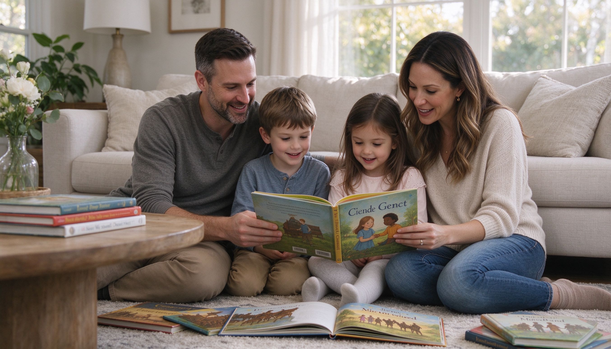

A day on, not a day off. Age-appropriate history, kids' books, volunteering ideas, and family-friendly ways to honor Dr. King's legacy.
Martin Luther King Jr. Day (third Monday of January) is more than a day off school. It's a chance to talk about fairness, kindness, and standing up for what's right — in words kids can understand. Here's how to make it meaningful without overwhelming young children.
Keep it simple and hopeful: "Dr. King was a man who believed everyone should be treated kindly, no matter what they look like. He helped people get along." Focus on the "I Have a Dream" part, not the hard parts.
You can add context: not long ago, Black and white people weren't allowed to share schools, buses, or water fountains. Dr. King led peaceful protests to change that. Talk about why peaceful protest matters, and why his work isn't finished.